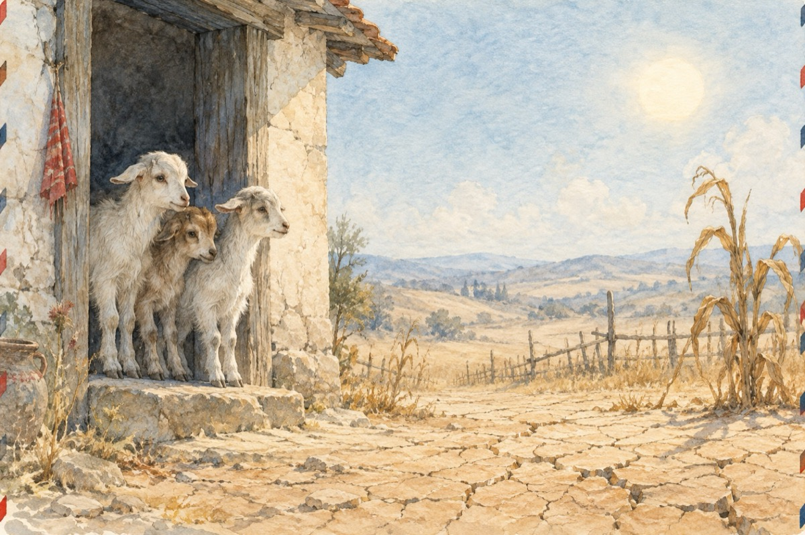

Seceta din ’46
Se-ntâmpla când felu-ntâi lipsea
La felul doi mama vaca o mulgea
Și laptele cu făină de grâu îl îngrășa
Zahăr nu punea că nu era.
Când vaca de-acum s-a înțărcat
Și-al doilea război s-a terminat
Și meniul nostru zilnic s-a schimbat
Foametea la ușa casei s-a postat.
Seceta:
– Trei iezi toți băieți
Deschideți, de vreți, nu vreți,
Seceta-i la voi la poartă
Să-i deschideți vă așteaptă
Că v-aduc lipsă de ploaie
Și vă feresc de noroaie
Vă iau frunza din pădure
Și dulceața de la mure
Știulețele din porumb
Iarba verde de pe crâng
Vreau totul ca să dobor
Și apele din izvor
Cu soarele în ajutor.
Iezii:
– Nu ieșim deloc din casă
Fiindcă mama nu-i acasă
Ai venit la noi să stai
Altă treabă nu mai ai?
Mama e după mălai
Du-te, secetă-n pustii
Pe la noi să nu mai vii!
Casa-i goală, masa-i goală
Noi suntem cuprinși de boală
Doar atât avem în minte,
Căci pământul ne înghite.
Seceta:
– Vreau ca să vă scot afară
Să umblați prin foc și pară
Pământul e tot crăpat
Fântânile au secat
Speranța nu-i la vecini
Ei mănâncă rădăcini
Și beau apă de la rouă
De voi, să vă pese vouă
Ieșiți ca să vă salvați
Că-nspre moarte vă-ndreptați
Că nici roua nu e rouă
Și nici nouri nu mai plouă.
Iezii:
– Decât să murim de foame
Mergem la tren în vagoane
Și-om pleca în lumea largă
Unde foamea nu se bagă
Trenul „Foamea” e în gară
Și înfometați ne cară
Nu ne dăm pe mâna ta
Și-am plecat toți trei la gară
Ducând foamea ca povară
Înghesuiți în vagoane
La geamuri puse obloane
Cu ușile zăvorâte
Și speranțe năruite
Cu cinci mere nemâncate
S-avem pe parcurs bucate.
Vasile Groza